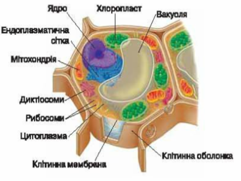

Порівняння рослинної та тваринної клітини
Будова клітини
-
Тваринна клітина
-

Рослинна клітина
Спільні органели і структури
-
Ядро з ДНК – керує роботою клітини, зберігає спадкову інформацію
-
Мітохондрії – забезпечують клітину енергією в процесі дихання
-
Рибосоми – забезпечують синтез білків
-
Клітинна мембрана – контролює поглинання та виділення клітиною речовин, відмежовує
цитоплазму від
зовнішнього середовища
Спільні органели та структури(фото)
-
Ядро з ДНК
-
Мітохондрії
-
Рибосоми
Транспортування речовин у рослинній та тваринній клітинах
-
Клітини заповнені цитоплазмою, яка забезпечує транспортування речовин до різних органел
-
Ендоплазматична сітка – система каналів
-
Діктіосоми – органели, які отримують речовини від ендоплазматичної сітки, “пакують” їх у
мембранні
пухирці та відправляють за призначенням
ДІКТІОСОМИ
Відмінні органели та структури
-
Рослинна клітина
-
Хлоропласти
-
Клітинна оболонка, насичена целюлозою
-
Вакуолі з клітинним соком
-
Тваринна клітина
-
Лізосоми - органели, в яких здійснюється внутрішньоклітинне травлення
-
-
ВИСНОВКИ
-
Тваринна та рослинна клітини містять як однакові, так і відмінні органели та структури
-
Клітини містять схожу систему транспортування речовин
-
ДЖЕРЕЛА
-
Відомості взято з підручника «Біологія. 6 клас»
-
Зображення – з сайту Вікіпедія uk.wikipedia.org